← 返回阅读库 · 原论文目录
论文讲解阅读文档 · 表征学习 · v199
Multi-Object Representation Learning with Iterative Variational Inference
视频时长 00:15:28；讲解文字 6,359 字符；提取讲解画面 37 张。按视频原顺序阅读，每段文字保留时间戳。
文字来自整段视频的自动语音转写，按自然停顿分段，并与 PPT / 论文页面 / 演示画面对齐。未将讲解压缩为摘要；术语、数字和口述公式请结合画面及原论文核对。 阅读稿已校正规范部分明确术语误识别；原始逐字稿和每处修改记录另行保留。
讲解画面为源视频截图（640×360），不是可编辑 PPT 文件。全片按每秒 2 帧扫描内容变化，逐步展开页保留；连续动画保留代表画面。清晰度受源视频限制。
下载完整资料包 · 含离线 HTML、PDF、Word、全部 PPT 画面和字幕。
原论文与材料
Multi-Object Representation Learning with Iterative Variational Inference · 下载完整 PDF（28 页）
按时间阅读
00:00:00–00:00:36 · 画面 001
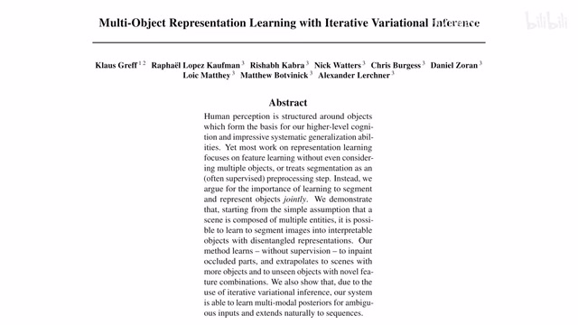
00:00:00–00:00:36 · 画面 001大家好,今天我们来快速水一篇论文 Multi-Object Representation Learning with Iterative Variational Inference 那这篇论文呢,就是 IODINE,这个元素点它呢,是我们这个之前介绍的这个 MONet 的直接的一个后续作者呢,也是同一个人那么在观看本视频之前呢如果你对我们的这个 MONet 不熟悉那非常推荐你去看我们原来的这个 MONet然后包括那个 VAEVariation Auto Encoder 这些东西呢非常推荐你去先回顾一下它们那么在这里呢我们只做一个简单的对比那么首先本文的核心的任务呢还是做这个场景的这个分解那分解之后不断玩我们需要用这个 feature 各自的独立的 feature 去表示分解出来之后每一个部分它的这个特征或者叫这个 Object Centric Features
00:00:36–00:02:09 · 画面 002
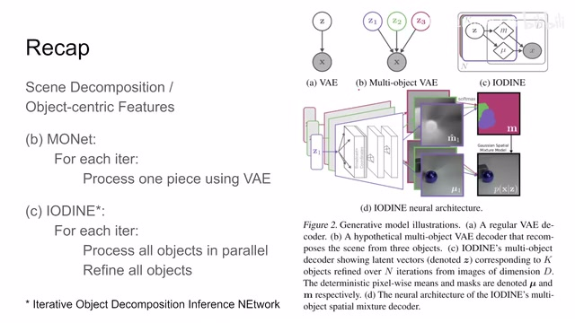
00:00:36–00:02:09 · 画面 002那么它的后续呢就是这个 genesis 还有这个我们之前介绍了这个 slot attention 这些东西的工作那么它的前序呢就是我们之前说的这个 monet 那么对于 monet 来说呢它呢是不断的去循环每次循环呢从图像中分出一块来每次循环呢从图像中分出一块来然后呢用这个 ve 去表示分开的每一块那这也有意味着呢我们每次分出来的块呢它的这个顺序是固定的我们没有办法更换说每一个 slot 我每次分出来的部分对应哪一块那么这种设计导致一个很直观的问题就是假如说我前一块拿多了或者拿少了对后续的区分都有影响同时这个场景的分割它本来就是一个无序的事情您要说应该先分出哪个物件来后分出哪个物件来这样合理吗这不合理的那么对于 monet 这些局限性作者就不得不开始重新思考
我们能不能有一种新的方法去让我们的分出来的各个部分他们是这个真正能够平行的运行然后呢相互独立而且顺序呢不受影响那么这个呢就是本文提出的方法那么当然呢本文也是有这个 interactive 的也是有一个迭代的过程但是它的迭代的过程呢是在我们平行的处理每一个部分每一个 object 的基础上
00:02:09–00:02:10 · 画面 003
00:02:09–00:02:10 · 画面 00300:02:10–00:02:32 · 画面 004
00:02:10–00:02:32 · 画面 004不断的去对当前这个 object 进行优化不断的去改进我们当前这个 object representation 还有它的这个 mask 的预测的这么一个流程那么看到这里这边这个示意图啊我们这个 monet 对吧它每个 object 都有一个 latent representation 然后这些呢它们抽样起来组合起来而你实际执行的时候呢是从 z1 一直到 z2z3 这样按顺序执行的而对于本文的方法呢对吧我们是 keg 这个 slot 它们并发的进行的
00:02:32–00:02:33 · 画面 005
00:02:32–00:02:33 · 画面 00500:02:33–00:04:18 · 画面 006
00:02:33–00:04:18 · 画面 006然后呢这个循环的过程呢是不断的 refine 每一个 slot 里面的内容这样一个过程所以你看它的这个循环跟我们这个 monet 它的循环存在这个本质上的不同那么另外呢 monet 它的网络的起点呢是输入的图像而本文呢我们是直接从这个 latent representation 开始我假设已经有这个 ve 里面的中间的这个有这么一群这个 gaussian distribution 我呢就直接采样做 decoder 开始重建重建完了之后呢再不断的去优化这么一个模型那么此外呢我们在上一个视频中没有仔细的去介绍这个 broadcast 的意义也就是这个 broadcast 的过程那这里呢做了一个很好的图示就是因为我们是 latent representation 抽样出来的可能是个 vector 我呢把这个 vector 当屏每个 channel 呢就是 vector 里面的一个 element 然后呢把这个 vector broadcast
整个这个图像呢想要的这么一个尺度那最后呢再加上横坐标和纵坐标的这个位置编码其实就是 normalize 的从-1 到 1 的这么一个位置的编码两个通道把这些弄好之后呢加到这个 decoder 里面一步一步去重建出这个图像来用这个呢是这个 broadcast 唯一这个东西呢我们在这里顺便就提一下那么下面呢我们就来看本文的这个具体的网络设计
00:04:18–00:05:01 · 画面 007
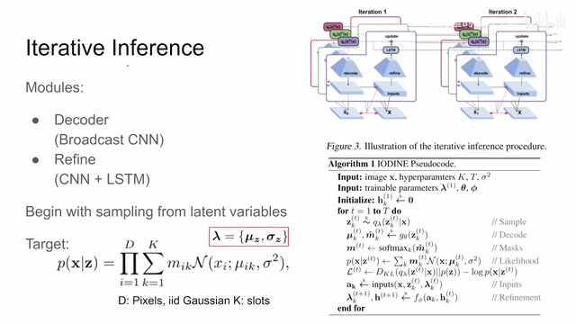
00:04:18–00:05:01 · 画面 007那么本门的核心呢是这个 iterative inference 也就是迭代的去不断的去 inference 那么它呢主要包含两个部分一个就是这个 decoder 我们之前介绍的是那个 broadcast vae 里面的这个 broadcast cnn 那么另一个呢是一个 refine network 它呢包含一个 cnn 类似于 encoder 但是不是然后呢加上这个 LSTM 那有了这个 LSTM 我们就可以不断的去迭代循环你看到从第一个那么这个网络应该从哪里开始呢那正如我们之前介绍的我们一开始呢维护了一串这个混合高斯模型我们呢就相当于从一个 VAE 中间断开那首先 VAE 要采样嘛对吧送到这个 Decoder 里面做重建那么这个重建呢包括一个这个原始图像三动道的图像的重建还有一个呢是这个 Mask 也就是我的每一个 slot 管哪一部分
00:05:01–00:05:02 · 画面 008
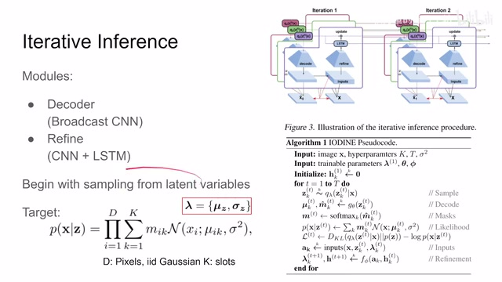
00:05:01–00:05:02 · 画面 00800:05:02–00:05:46 · 画面 009
00:05:02–00:05:46 · 画面 009那这一块的设计呢跟这个 monet 里面这个 vae 的后半部分是一样的你可以看到这里我们依然假设每一个像素啊他们都是独立的这个高斯分布那么整个那么这个 x 的这个 likelihood 或者说是这个 joint distribution 因为我们每个像素是独立的所以他们可以相乘然后最后呢要把每个 slot 加起来所以呢这里有个求和在这里每一个 slot 的这个 mask 乘上每一个 slot对吧它的这个概率那这个呢跟 monet 是一样的那么这里呢我们说明一下我们采样的这个混合高斯模型的它的这个均值和这个标准差啊都在这里了他们呢合称这个 lambda 那么当我们重建出来这个图像之后呢我们根据 mask 把它拼在一起那么很自然的呢就可以跟我们的原始图像做比较这一块呢是训练 VE 一样的那么但是后面呢作者这里有一些改动
00:05:46–00:05:48 · 画面 010
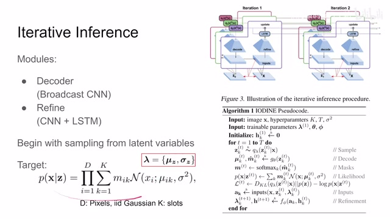
00:05:46–00:05:48 · 画面 01000:05:48–00:07:14 · 画面 011
00:05:48–00:07:14 · 画面 011我们看到呢他把原始的图像还有我们重建后的图像哎各种各样的信息拼在一起他叫他一个 input 然后呢把这个 input 送到我们的 refine network 里面用他提取的 feature 来更新了我们 lstm 的状态随后呢就更新了我们一开始的这个 latent representation 这一串这个 distribution 混合高斯模型的这一串的他的这些信息我们更新完之后呢来到这里我们就可以重新做第二次循环那一次往复那这里呢我们来看到算法的尾代码对吧初始化这些东西和训练的模型这里呢就是我们说的一开始的这个混合高斯模型的分布 Zeta 和这个 Fi 分别是我们的这个 Decoder 和这个 Refine Network 上面 Hyper Parameters 多少个 slot 去迭代多少次
那这个 sigma 呢很有意思呢它就是我们这个 pixel 里面的这个 sigma 那么因为我们有图像来说我们只知道这个图像的均值是多少就是这个 x 的值实际的值嘛那么这个 sigma 呢就是人为给定的一个超散数那这个呢跟 monet 的这个配置呢都是一样的那么接下来我们来看初始化完了之后呢首先做采样根据我们的这个混合高斯模型的这些东西给它采样出 k 个这么一个 slot
00:07:14–00:07:17 · 画面 012
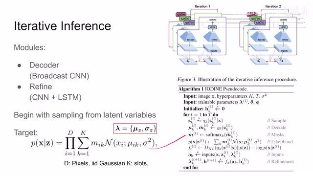
00:07:14–00:07:17 · 画面 01200:07:17–00:08:17 · 画面 013
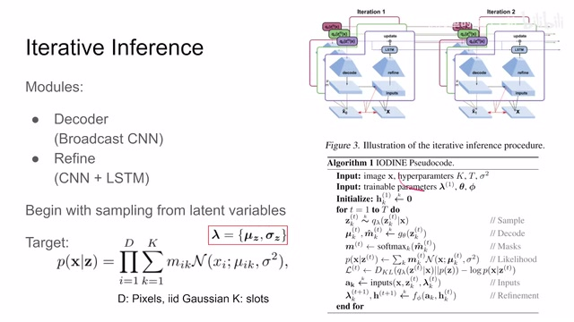
00:07:17–00:08:17 · 画面 013啊 k 这个波浪号呢表示他们是相互独立的就每个采样之间没有影响然后呢过我们的这个 decoder 重建出来这个啊图像和这个他对应的 mask 因为不同的 mask 他们的和不一定是一吗所以呢做一个 softmax 来决定说每一个这个图像他们混合在一起的这个比例吗然后呢算我们的 likelihood 本质呢就是我们重建后的这个图像跟我们原始图像他们有多相似吗那么这个 ve 的这个 loss 之前我们也说了 full log likelihood 加上这个 kl divergence 让我们这个 latent representation 和这个 normal distribution 这个高顺 distribution 尽量接近那到这里呢都还好说那么下面这个操作呢其实一个很神奇的操作就是他把我们的这个一开始的 latent representation 拿上了我们的这个采样后的结果哎给他拿上了然后呢我们重建这个结果拿上了
00:08:17–00:08:18 · 画面 014
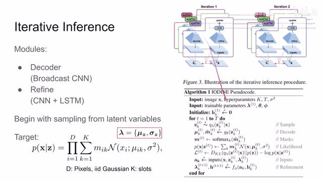
00:08:17–00:08:18 · 画面 01400:08:18–00:08:56 · 画面 015
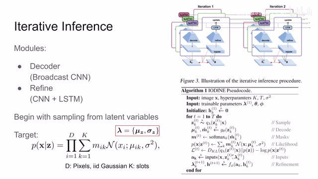
00:08:18–00:08:56 · 画面 015把它拿在一起生成了 keg 这个 ak 它呢是这个 refine network 的输入然后呢根据这个 refine network 还有这个 lstm 这里面的信息呢我们去更新这个 lstm hidden state 还有下一次这个类似 representation 这些分布啊什么这些东西那这些 refine 什么的都是标准的操作包括其实训练 vae 其实都是标准的操作下面呢我们就要关注这个 inputs 它里面到底塞了什么东西那么当我们仔细看到这个 inputs 里面其实它塞了一车人啊人员看到这些 inputs 也就是我们的 refine network 它的输入包括什么呢这个首先重建后的图像这里这个 mins 和 mask 呢它有点这个 confusing 其实它就指的是我们的网络的 decoder 的这个输出那这个 mask 呢是这个经过 softmax normalize 之后的那这个呢就是原始的输出这些呢都是 vae decoder 的这个输出
00:08:56–00:10:41 · 画面 016
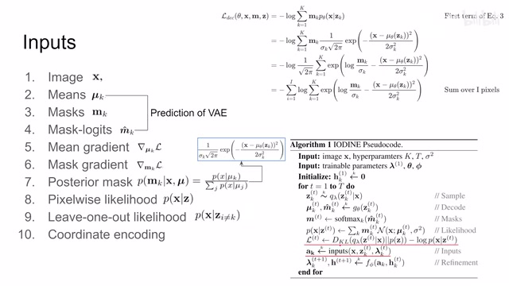
00:08:56–00:10:41 · 画面 016那再往下呢作者居然用了 gradient 我们之前在这里计算了这个 ve 的这个 loss 他肯定对我们的这个 mean value 他有 gradient 对这个 mask 也有 gradient 作者呢把这些东西也算到我们的这个 inputs 里面了很有意思的一个设计那么再往下呢作者还包括了这个 mask 的这个后页那么这个东西呢他本质上这个玩意我们怎么生成 mask 那具体来看呢就是所有 kick slot 他的这个joint distribution 或者叫数值上讲就是 likelihood 他们的这个和去除以当前这个 slot 他的这个 likelihood 这个呢就是这个 mask 的这个后页那更具体来说呢就是这个式子这个式子呢摘自哪里呢摘自这里我们可以看到那么这个呢是我们之前计算整个这个 decoder 的这个 native log likelihood 的这个这样一个表达式
那我们把这个 negative 和这个 log 去掉呢里面就只有这个 likelihood 然后呢因为我们关注的是这个 mask 的后页呢我们只看这个部分这个部分呢这里还是因为我们假设这个每个 pixel 是这个 Gaussian distribution 而且它们是相互独立的我们根据 Gaussian distribution 的这个概率密度函数对吧就可以把它写成这个样子那么这个呢就是这个 mask 它的这个后页它的由来那么还有呢这个 pixelwise likelihood
00:10:41–00:10:42 · 画面 017
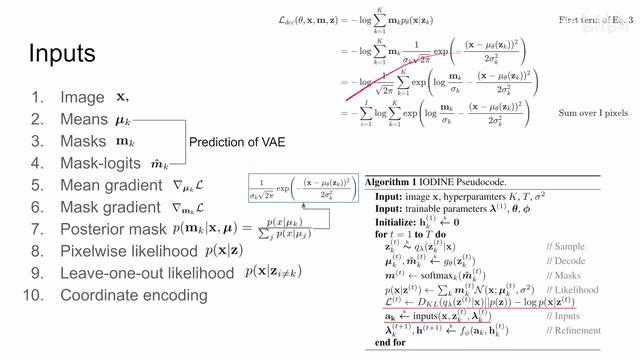
00:10:41–00:10:42 · 画面 01700:10:42–00:11:33 · 画面 018
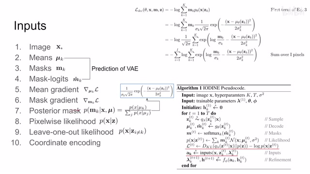
00:10:42–00:11:33 · 画面 018那还是我们之前说了，因为这个是负 log likelihood，把负号和 log 去掉，就只留里面的这一部分，那就是这个，就是带上这个 mask 的这一部分就合。那么这里呢，坐着还有一个 leave one out 这个 likelihood。那么它呢，相当于你在计算完整个这个 pixelwise 这个 likelihood 之后呢，减去一个这个 slotted likelihood。那或者说呢，你看这里我们是把 k 个这个 likelihood给他求和吗这个是我们总的这个来客户那么离万澳的相当于就是我虽然有 k slot 但是呢这里我只求和到这个 k 减一那么这样计算 k 次每一次呢都分别拿出去一个这个 slot 每一次计算都计算 k 减一个这个来客户那这个呢是离万澳那么最后呢还有这个 coordinate 就是我们这个 decoder 里面呢这个坐标从-1 到-1 的两个通道的这样一个坐标那么整个这一套
00:11:33–00:11:34 · 画面 019
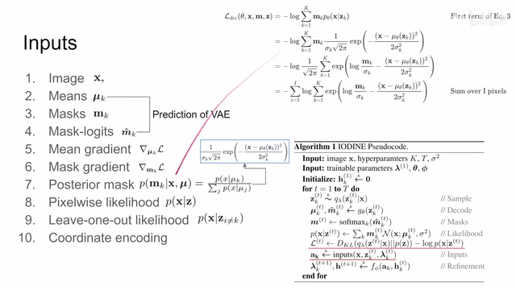
00:11:33–00:11:34 · 画面 01900:11:34–00:11:43 · 画面 020
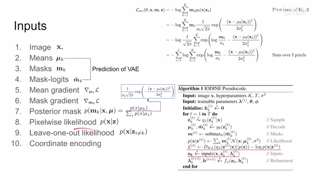
00:11:34–00:11:43 · 画面 02000:11:43–00:11:45 · 画面 021
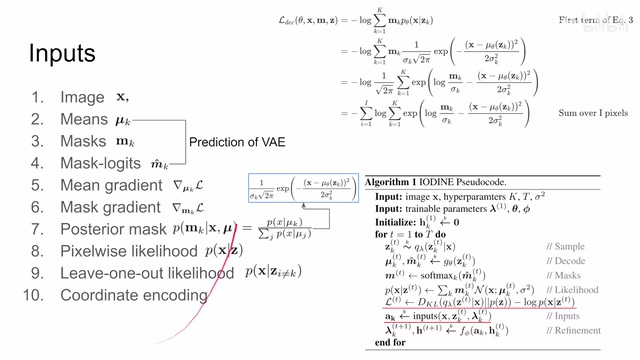
00:11:43–00:11:45 · 画面 021它们都是每个 pixel 有一个值，它们的尺寸呢都是我们这个图像尺寸的一个大小。那把这个图像尺寸的大小的东西呢，就可以送到我们的这个 refine network 里面。那么这里这边这个表呢，列出了每一个 input 它的这个通道的数量。然后呢，有的呢需要加这个 layer normalization，有的呢为了训练的稳定呢，把它的 gradient 也停掉了。感兴趣的朋友呢，可以仔细的对照来看一下。
00:11:45–00:11:49 · 画面 022
00:11:45–00:11:49 · 画面 02200:11:49–00:11:50 · 画面 023
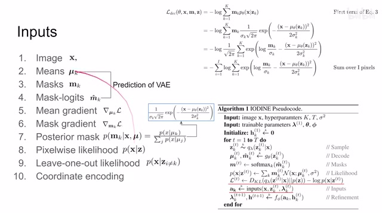
00:11:49–00:11:50 · 画面 02300:11:50–00:11:51 · 画面 024
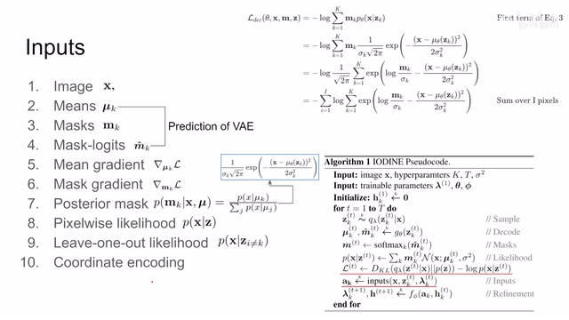
00:11:50–00:11:51 · 画面 02400:11:51–00:11:57 · 画面 025
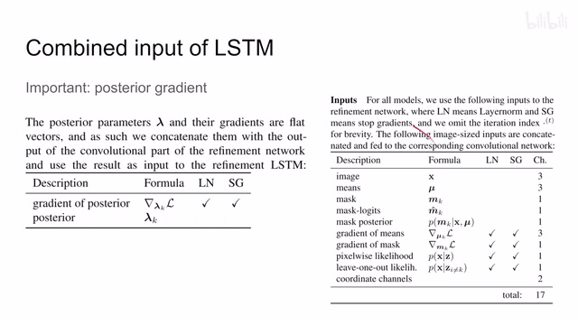
00:11:51–00:11:57 · 画面 02500:11:57–00:11:58 · 画面 026
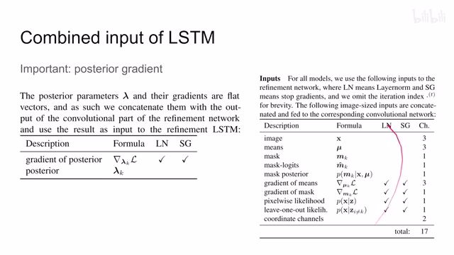
00:11:57–00:11:58 · 画面 02600:11:58–00:12:12 · 画面 027
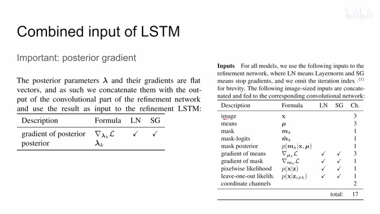
00:11:58–00:12:12 · 画面 027那么有了这个 input 之后呢，我们就送到我们的 encoder，其实就是 refine network 里面，然后呢提出一个 feature 来。下面呢就该送到 LSTM 里面了。但是呢，作者呢这里有一个很重要的发现，就是我们的后验的这个 gradient，它呢对我们的训练的帮助非常大的。它呢就是从我们这个 ve loss 开始一路求导传递到最开始 sampling 的这个过程中它
00:12:12–00:12:13 · 画面 028
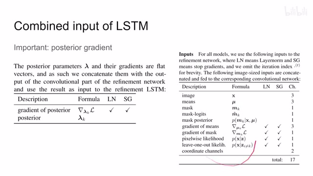
00:12:12–00:12:13 · 画面 02800:12:13–00:13:05 · 画面 029
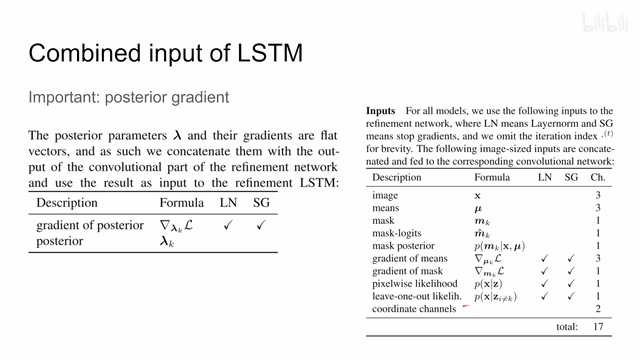
00:12:13–00:13:05 · 画面 029这个值是对我们的训练的帮助很大，虽然他计算起来真的非常费事啊。同时呢，这个类似的文字是这个 stop gradient，那当然也找不了我们这 posterior 他本身吗，这个值。那么因为这些值呢都是 vector，所以呢他跟我们之前从 cnn 里面提出来这个 feature 一起给他串接起来，然后呢送到我们这个 lstm 里面，再根据他自己的状态再对我们这个 posterior 哎，再给他进行调整那么这个呢，就是本文的这个核心的技术细节。那么最后呢，作者还提到说在训练中他们发现，我们因为是不断的在循环嘛，LSTM 嘛，我使用一个加权的和把我们之前的几次循环中的这个 loss 给它加进来。你看这个加权的方式加进来这样的 loss 呢，能够有助于训练。那么最后呢，我们选择一些作者汇报的结果，比如说这个 Visualization 不同的数据集
00:13:05–00:13:06 · 画面 030
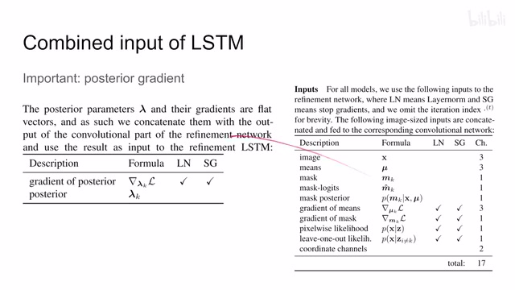
00:13:05–00:13:06 · 画面 03000:13:06–00:13:10 · 画面 031
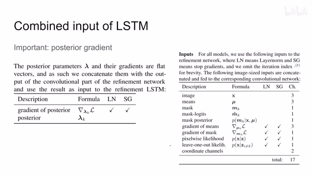
00:13:06–00:13:10 · 画面 03100:13:10–00:13:24 · 画面 032
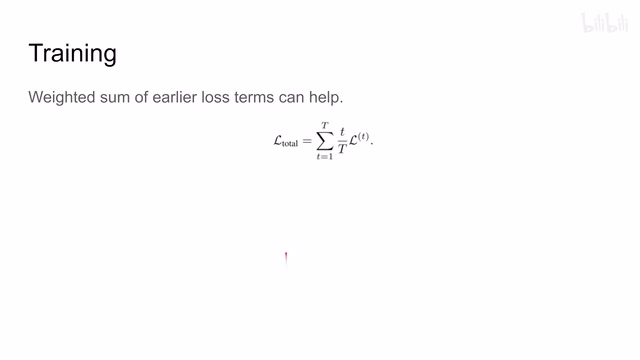
00:13:10–00:13:24 · 画面 03200:13:24–00:13:25 · 画面 033
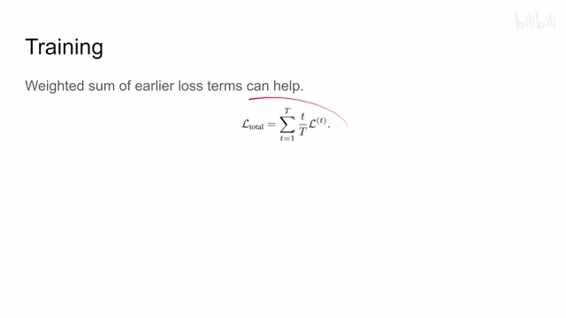
00:13:24–00:13:25 · 画面 03300:13:25–00:13:27 · 画面 034
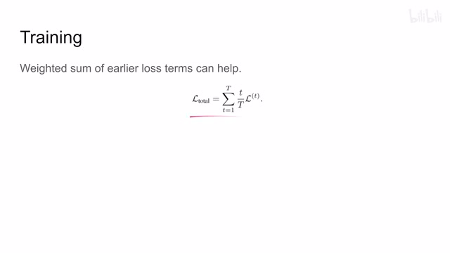
00:13:25–00:13:27 · 画面 03400:13:27–00:14:15 · 画面 035
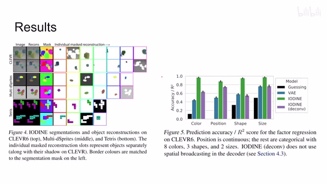
00:13:27–00:14:15 · 画面 035我们的这个每个 slot 它能给我们规划出什么样的 mask，然后重建出什么样的图像来对吧？你看到这些效果还是能不错的。当然这个任务还是都是比较简单的任务。那这边呢，我们为了评估我们的这个 representation 学的这个好坏嘛，用了这个不同的下游任务做分类来判断物体的颜色、位置啊、形状还有尺寸等等。那通过这样的下个任务呢，能够来判断我们这个 representation 的好坏。而且呢，其中这个 broadcast VAE 这个 broadcastCNN 这个东西呢，它的一个效果对比一下，有它和没有它效果还是挺明显的。那么最后呢，还有一个 disentanglement，就是我们在 latent space 里面有一个 latent vector 嘛，它里面的每一个 element 我们如果让它沿着一个方向移动，它其实能够操作我们的这个图像的这个绘制的东西
00:14:15–00:15:28 · 画面 036
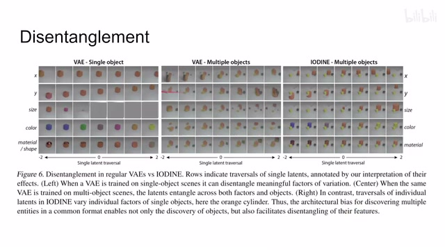
00:14:15–00:15:28 · 画面 036比如说这个变量控制在 X 轴移动，这个变量控制 Y 轴移动对吧？这是一个挺有意思的可视化，我们之前在βVAE 里面就已经见过了，像这种东西对吧？那本文呢，对比这个 VAE 来说，虽然 VAE 能够比较好的操作单个这样一个物体，但在这个图像中有很多个物体的时候呢，看到本文的方法呢，取得了比 VAE 好很多的这么一个性能好的。那么以上就是我对这篇论文的一个快速的介绍。
我们这个系列的目的呢，还是鼓励你去阅读原文，阅读作者大量的这个实验的报告，实验的结果，从中获得你需要的对你有帮助的结论。那么今天也是除夕，那么在这里呢，祝这个有节日过的朋友们呢，春节愉快 ，国家欢乐。那对于没有节日过的朋友们呢，现在是美国东部时间早上 5 点 17 分，这个视频就是给你们做的好的 ，感谢您的收看，再见。
00:15:28–00:15:28 · 画面 037
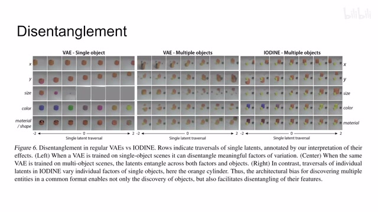
00:15:28–00:15:28 · 画面 037转写与来源说明 · 0 个自动复核提示
保留 33 个原始语音片段，0 个片段触发自动复核提示。提示仅用于定位可能的术语、重复或识别问题，不等于已确认错误。
讲解画面为源视频截图（640×360），不是可编辑 PPT 文件。全片按每秒 2 帧扫描内容变化，逐步展开页保留；连续动画保留代表画面。清晰度受源视频限制。
原视频：paper/合集_2026-10-16_表征学习/[论文速览]Multi-Object ... with Iterative Variational Inference[1903.00450].mp4
SHA-256：795d3388535817b153369d0edc073cd505c867c53585dfffa66c43641a48278c
全文按视频语音与画面制作。原论文可从上方链接下载；完整资料包保留全文、原始逐字稿、字幕和校对记录。